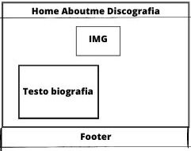
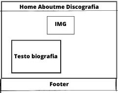

ABSTRACT
BENCHMARKING
Obbiettivi
Il sito in questione si pone l’obbiettivo di condividere un'artista emergente italiano, promuovendo la sua musica,raccontando quella che è la sua storia, con poche parole che descrivono tutto ciò che sta dietro ad un pezzo,al fine di dare anche chiavi di lettura diverse per chi ascolta le sue canzoni per la prima volta. La musica non è fama ma amore e passione per quello che si fa,quindi perchè non dare una possibità a chi davvero ci crede.
Target utente
Il target a cui si rivolge il sito è il ragazzo/a che è aperto e disposto ad ascoltare cosa ha da dire un ragazzo della sua età. Ma più ampiamente il sito è rivolto a chiunque avesse voglia di scoprire o approfondire la vita e la discografia di FALZO.
Competitors
spotify=Spotify è un servizio di riproduzione digitale di musica, podcast e video, con accesso immediato a milioni di brani e altri contenuti di autori provenienti da tutto il mondo. Le funzioni di base, come la riproduzione musicale, sono completamente gratuite, ma puoi anche scegliere di effettuare l'upgrade a Spotify Premium.
genius=Genius è un programma di marketing esclusivo creato per offrire ai partner idonei più visibilità sulla nostra piattaforma. Entrare a far parte di Genius ti offre visibilità extra attraverso icone speciali, un ranking migliore e diversi investimenti di marketing da parte di Booking.com.
=
Struttura e layout
Il sito è strutturato in più pagine in ordine: home, aboutme, discografia, e i collegamenti ai vari social dell’artista. Nella Home sono riportati gli ultimi brani dell’artista. Nella seconda pagina ci si immerge inuna breve lettura per conoscere Federico e come la musica abbia sempre fatto parte della sua vita. Nella terza pagina troviamo tutti i link alle sue canzoni,sia suyoutube che spotify , in più un breve commento ,fatto dall'artista stesso, su ogni suo pezzo. Tutto questo è stato realizzato utilizzando la piattaforma visual studio code, attraverso i lingauaggi html e css che permettono di creare siti web partendo da zero.
Architettura del sito

Wireframe
 
 .jpg)
Linguaggi e strumenti
Linguaggi
HTML e CSS
Strumenti
Bootstrap v5.3: sito per parti di codice HTML e CSS per la grafica ed elementi aggiuntivi; HTML.it: sito per parti di codice HTML e CSS per la grafica ed elementi aggiuntivi; Adobe Color: sito per la creazione della palette di colori; Flaticon.com: sito per la scelta delle icone; Google Font: sito per la scelta del font; Canva.com: sito per creare le grafiche; Google Analytics: sito per il controllo e la valutazione dell’andamento del sito; Github: sito per la pubblicazione del sito sul web.
Comunication strategy
Tutte le scelte comunicative sono state pensate per condividere, principalmente con utenti di giovane età la musica e la carriera di Federico Falzoni. I Font le immagini, i testi sono tutti scelti apposta per favorire la lettura concentrata su poche informazioni selezionate e per poter quindi rimanere più impresse al lettore durante la visualizzazione del sito. Ogni scelta ha l’obbiettivo di rendere il più semplice e scoorevole la navigazione dell’utente.
Target audience
Il sito è indirizzato principalmente ai ragazzi/e di età compresa tra i 16 e i 30 anni. I collegamenti ad i social network ,quali Instagram e Youtube, danno la possibilità di rimanere aggiornati con le novità dell’artista preso in questione. Permettendo cosi a chiunque di decidre liberamente se approfondire o meno l'ascolto delle canzoni.
Promozione
Il sito sarà pubbicizzato attraverso i social media, in particolare attraverso le ‘’stories’’ di instagram,la condivisione dell’url del sito sui gruppi whatsapp, il passaparola fra amici e familiari. Come obbiettivo mi sono prefissato di raggiungere almeno 50 visite (da utenti unici) al sito.